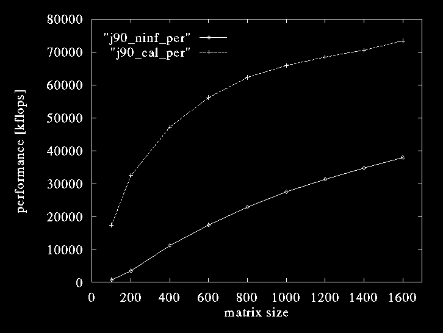

Environment
hpc - j90 ninf_call (peak) matrix init trans calc total performance speed [sec] [sec] [sec] [sec] [kflops] [byte/sec] 100 0.777 0.163 0.04 0.98 698 495755 200 0.613 0.17 1.56 3480 524646 400 2.163 0.91 3.85 11177 593254 600 4.963 2.58 8.32 17396 581263 800 8.733 5.50 15.01 22821 587016 1000 13.393 10.15 24.32 27499 597925 1200 19.273 16.88 36.93 31268 598226 1400 26.063 25.99 52.83 34703 602049 1600 34.113 37.30 72.19 37896 600733 average 594352(except 100 and 200) 4.755 Mbps
ninf_call elapsed time
j90_ninf : ninf_call elapsed time
j90_cal : calculation time
j90 performance
j90_ninf_per : ninf_call performance
j90_cal_per : calculation performance
